방송통신기사 (2006-08-06 기출문제)
1과목: 디지털 전자회로
1. 다음 그림의 논리회로와 등가인 회로는?
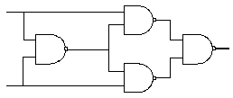
- Half adder
- Full adder
- Exclusive OR
- Exclusive NOR
(정답률: 55%)

2. 어떤 증폭기에서 입력전압이 5[mV]이고 출력전압이 2[V]일 경우 이 증폭기의 전압 증폭도는 약 몇 [dB] 인가?
- 28[dB]
- 40[dB]
- 52[dB]
- 66[dB]
(정답률: 알수없음)
3. 그림과 같은 다이오드 게이트(diode gate)의 출력(Y)은 약 얼마인가?
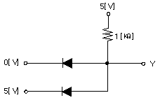
- 0[V]
- 5[V]
- 10[V]
- 15[V]
(정답률: 알수없음)
4. 비동기식 모드(mode)-13 계수기를 만들려면 최소한 몇 개의 플립플롭이 필요한가?
- 13
- 7
- 4
- 2
(정답률: 50%)
5. 일반적인 부궤환(negative feedback) 증폭기의 특성을 설명한 것으로 틀린 것은?
- 전달이득(transfer gain)이 감소된다.
- 잡음이 감소된다.
- 비직선 일그러짐이 감소된다.
- 입력저항(Rif)이 항상 증대된다.
(정답률: 30%)
6. 그림과 같은 CE 증폭기의 동작점(Q)에서 전류 ICQ와 VCEQ의 값을 구하면? (단, TR의 VEB(ON)=0.7[V], IC=IE로 간주한다.) (그림 오류로 현재 복원중입니다. 그림 내용을 아시는 분들께서는 오류 신고를 통하여 보기 작성 부탁 드립니다. 정답은 2번입니다.)
- ICQ = 1.0[mA], VCEQ = 4.5[V]
- ICQ = 1.5[mA], VCEQ = 4.8[V]
- ICQ = 1.8[mA], VCEQ = 4.2[V]
- ICQ = 2.0[mA], VCEQ = 5.0[V]
(정답률: 40%)
7. 60[V]로 충전되어 있는 1[㎌] 콘덴서를 1[㏁]의 저항을 통하여 방전시키면 1초 후의 콘덴서 양단의 전압은 약 얼마인가?
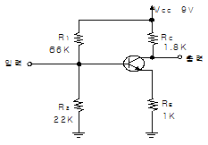
- 10[V]
- 22[V]
- 36[V]
- 60[V]
(정답률: 알수없음)
8. 다음 연산증폭회로에서 출력전압 VO는?
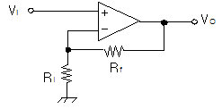
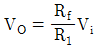
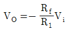
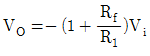
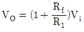
(정답률: 19%)
9. 논리식
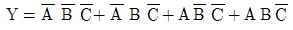
를 간략하게 구성한 회로는?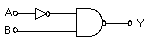
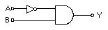
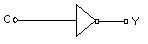
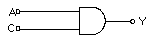
(정답률: 40%)
10. 1000㎑ 의 반송파에 40㎑ 의 저주파 신호파로 진폭변조 시켰을 때, 상측파대의 최고 주파수와 하측파대의 최저 주파수의 차는 얼마인가?
- 20㎑
- 40㎑
- 60㎑
- 80㎑
(정답률: 10%)
11. 다음 중 적분회로로 사용할 수 있는 회로는?
- 저역통과 RC회로
- 고역통과 RC회로
- 대역통과 RC회로
- 대역소거 RC회로
(정답률: 알수없음)
12. 다음 중 발진회로에 수정진동자를 사용하는 가장 큰 이유는? (단, Q : Quality factor)
- 발진주파수가 낮기 때문이다.
- Q의 값이 높기 때문이다.
- 안정도가 가변하기 때문이다.
- 발진주파수를 임으로 변화시킬 수 있기 때문이다.
(정답률: 43%)
13. 어떤 논리회로에서 입력은 A, B, C이며 출력은 입력 중에서 둘 이상이 1일 때, 출력 Y가 1이된다면 이 논리회로의 논리식은?
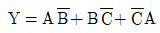
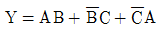
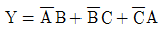
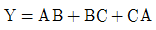
(정답률: 31%)
14. 이상적인 연산 증폭기의 R2에 흐르는 전류 I는? (단, R1=3[㏀], Vi=4[V]이다.)
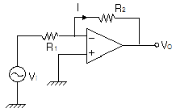
- 0.2[mA]
- 0.5[mA]
- 2[mA]
- 5[mA]
(정답률: 10%)
15. 슈미트 트리거 회로에 입력파형으로 주기적인 정현파를 인가할 때, 출력파형은 어떠한 파형이 되는가?
- 정현파
- 삼각파
- 구형파
- 타원파
(정답률: 46%)
16. 다음에 설명한 각종 복조회로에 대한 설명 중 틀린 것은?
- PAM파는 복조 과정에서 대역여파기를 사용한다.
- PLL회로는 FM검파에 이용 가능하다.
- SSB의 신호 복조는 동기검파가 이용된다.
- 포락선 검파기의 부하회로의 시정수가 과대하면 Diagonal Clipping이 생긴다.
(정답률: 알수없음)
17. 4변수들에 대한 카르노도(Karnaugh map)가 그림과 같이 주어졌을 경우 이를 부울식으로 표현하면?
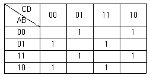
- A⊕B⊕C⊕D
- (A+B)⊕(C+D)
- (A⊕B)+(C⊕D)
- AB⊕CD
(정답률: 30%)
18. RS 플립-플롭 정논리회로의 설명으로 틀린 것은?
- 2개의 입력 R,S와 2개의 출력 Q,
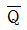
가 모두 저레벨로 된다. - 입력 R, S가 모두 저레벨일 때 출력 Q,
 는 전상태를 유지한다.
는 전상태를 유지한다. - S가 고레벨일 때 Q,
 가 모두 저레벨로 된다.
가 모두 저레벨로 된다. - R과 S가 같이 고레벨이면 출력은 불확정이다.
(정답률: 알수없음)
19. 변조신호의 주파수가 fm인 경우 협대역 FM(Narrow-band FM)의 대역폭은?
- 약 fm
- 약 2fm
- 약 4fm
- 무한대
(정답률: 알수없음)
20. 다음 TR의 접속방식에 대한 설명 중 틀린 것은?
- 전압, 전류이득이 모두 1보다 큰 것은 CE 접속방식이다.
- CB접속방식은 전압이득이 거의 1이다.
- CB접속방식은 입력저항이 크고 출력저항이 작다.
- CB접속방식은 입력저항이 작고 출력저항이 크다.
(정답률: 알수없음)
2과목: 방송통신 기기
21. 다음 중 pcm통신 방식의 수신단에 설치하는 회로는?
- 표본화 회로
- 양자화 회로
- 부호화 회로
- 복호화 회로
(정답률: 55%)
22. 다음 중 NSTC TV 방식에서 수평동기 주파수는?
- 약 75,350[Khz]
- 약 35,734[Khz]
- 15,734[Khz]
- 약 75.350[Khz]
(정답률: 55%)
23. 개별 방송 프로그램의 제작을 조정하는 장소로 영상 , 음성 ,조명을 조정하는 곳은?
- 스튜디오
- 주조정실
- 부조정실
- 텔레시네실
(정답률: 알수없음)
24. Ntsc신호에서 영상 및 음성신호의 변조방식은 각각 무엇인가?
- AM , AM
- AM , FM
- FM , FM
- FM , PM
(정답률: 84%)
25. 영상내의 색정보, 즉 영상의 크로미넌스(Chrominance)정보를 그래픽 표시로 나타내는 측정계기는?
- Waveform monitor
- Color displayer
- Vector scope
- Level meter
(정답률: 90%)
26. 다음 중 방송수단에 의한 분류가 아닌 것은?
- 텔레비전방송
- 인터넷방송
- 초고주파방송
- 위성방송
(정답률: 80%)
27. 위성방송에서 정지궤도의 설명 중 틀린 것은?
- 지구자전과 동일한 방향과 속도로 공전하는 방송이다.
- 24시간 한 지점에서 통신이 가능하다.
- 궤도가 한 개뿐이므로 위성수가 제한된다.
- 고도가 약 36.000Km정도로 전파지연은 나타나지 않는다.
(정답률: 30%)
28. 임피던스가 25[Ω]의 반파장 안테나와 특성임피던스가 100[Ω]인 선로를 정합하기 위한 임피던스는?
- 150[Ω]
- 250[Ω]
- 25[Ω]
- 50[Ω]
(정답률: 알수없음)
29. 다음 중 방송제작에 사용되는 조명 (라이트)의 종류와 설명으로 틀린 것은?
- Base Light는 전체를 균일하게 밝게 해주는 조명이다.
- Key Light 는 주광선으로서, 주요 피사체의 밝기를 얻기 위해서 중요한 역할을 한다.
- Back Light는 키라이트에 의해 생기는 반대방향의 빛, 피사체를 배경으로부터 떠오르게 하거나, 디테일을 강조하기 위해 사용한다.
- Set Light는 피사체의 정면 아래쪽으로부터의 빛이다.
(정답률: 80%)
30. SNC(Satellite News Gathering) 사용시 현 위치의 좌표를 알기 위해 사용하는 기기는?
- EPS
- DPS
- GPS
- PPS
(정답률: 73%)
31. 위성으로부터 오는 신호를 한곳으로 모아주기 위하여 사용되는 수신안테나의 종류가 아닌 것은?
- 파라볼라 안테나
- 카세그레인 안테나
- 혼 반사 안테나
- 야기 안테나
(정답률: 73%)
32. 다음 중 TV신호 파형을 감시 측정하는데 사용되는 장비는?
- 텔레시네설비
- 파형 모니터
- 마스터 모니터
- 컬러 인코더
(정답률: 73%)
33. 한 장소로부터 신호를 받아, 다른 장소로 신호를 보낼 수 있도록 하는 루팅(routing)장치는?
- Cable Box
- Multiplexer
- Patch Panel
- Scanner
(정답률: 알수없음)
34. 디지털시스템에서 어떤 신호가 가지는 최고 주파수 조건에 의하여 샘플링 조건이 만족되었을 때, 수신측에서 신호의 왜곡없이 재생이 가능한 조건이 된다. 다음 중 원신호, 샘플링 주파수사이에 표본화정리조건으로 알맞은 것은? (단. fs = 샘플링 주파수 , fmax = 원 신호의 최대주파수)
- fs ≥ 2fmax
- fs ≥ 4fmax
- fs ≤ 2fmax
- fs ≤ 4fmax
(정답률: 77%)
35. 송신소의 송신기의 출력이 1kw로 송신 되던 중, 3db를 낮추어서 송신할 때 전력은 얼마로 낮아지는가?
- 0.1kw
- 0.5kw
- 1kw
- 2kw
(정답률: 알수없음)
36. 다음 중 텔레 텍스트를 가장 잘 설명한 것은?
- 방송 형태의 정보를 제공하는 서비스로 문자다중방송이라 한다.
- 시스템은 정보제공자, 정보수용자 , 정보가공, 분배자로 구성된다.
- 필요한 정보를 전화와 텔레비전으로 받아본다.
- 정보 수용자 모두가 정보 제공자가 된다.
(정답률: 91%)
37. 다음 중 마이크의 원리에 따른 분류에 속하지 않는 것은?
- 카본 마이크로폰
- 콘덴서 마이크로폰
- 다이나믹 마이크로폰
- 레이저 마이크로폰
(정답률: 73%)
38. HDTV 화면의 가로 대 세로 비율은?
- 4:3
- 9:6
- 16:9
- 19:6
(정답률: 84%)
39. 전화망을 이용하여 일반 텔레비전과 연결되어 있는 데이터 베이스(DB)를 갖춘 센터에 이용자가 희망하는 정보화면을 요구하면 전화회선을 통하여 문자나 도형정보가 전송되어, 이것이 화면에 나타나는 시스템은?
- 비디오 텍스
- VAN
- ISDN
- RBDS
(정답률: 84%)
40. 다음 중 동일한 출력이라고 가정할 때, 방송구역에 가장 크게 영향을 미치는 것은?
- 안테나 공학
- 필터의 종류
- 송신기의 특정
- 안테나의 위치
(정답률: 알수없음)
3과목: 방송미디어 공학
41. 중파 라디오 방송을 위해 사용하는 변조 방식은?
- FM
- AM
- VSB
- DAB
(정답률: 46%)
42. 다음 중 양자화를 가장 잘 표현한 것은?
- 샘플링 주파수의 선정
- 샘플링된 신호를 디지털 양으로 표시
- 디지털 신호의 아날로그화
- 원신호의 디지털 코드화
(정답률: 80%)
43. 다음 중 디지털 방송식의 종류에 속하지 않는 것은?
- ATSO
- DVB-T
- 8-VSB
- ISDB-T
(정답률: 60%)
44. 다음 중 FM 송신기와 관련 없는 것은?
- APC
- AFC
- 주파수 체배기
- De-emphasis
(정답률: 60%)
45. 다음 중 컬러 버스트(burst) 신호의 역할은?
- 포화도 조절
- 색상 조절
- 휘도 조절
- 색위상 동기
(정답률: 알수없음)
46. 다음 중 멀티미디어에 대한 설명으로 틀린 것은?
- 멀티(Multi)와 미디어(Media)의 합성어이다.
- 문자, 영상, 화상, 그림, 소리 등 다양한 미디어를 표현할 수 있다.
- 고속 통신망을 이용하여 사용자가 다양한 대용량의 정보를 이용할 수 있다.
- 동영상은 표현 방식의 문제로 인해 멀티미디어 요소에 해당되지 않는다.
(정답률: 70%)
47. TV화면을 2번에 나누어 주사하여 2개의 필드가 하나의 프레임을 만들어 주는 주사방식은?
- 순차주사
- 비월주사
- 유효주사
- 수평주사
(정답률: 70%)
48. 다음 중 SDTV급 품질의 비디오에 해당하는 것은?
- SP@ML
- MP@HL
- MP@ML
- HP@HL
(정답률: 55%)
49. 다음 중 유선방송의 구내전송 설비에서 시청가입자의 TV수상기 입력단자가 300[Ω]인 경우에 동축케이블의 75[Ω]불평형 신호를 300[Ω]평형 신호로 변화하는 데 이용되는 것은?
- 탭오프
- 보안기
- 정합기
- 신호증폭기
(정답률: 알수없음)
50. 다음 중 드라마 제작에 적합한 마이크에 대한 설명으로 틀린 것은?
- 진동이나 충격에 강해야 한다.
- 특정한 좁은 주파수에 대해서만 좋은 강도를 가져야 한다.
- S/N 비가 좋아야 한다.
- 소형 , 경량이어야 한다.
(정답률: 80%)
51. 다음 중 비디오, 오디오. 데이터방송을 제공하는 디지털 멀티미디어 방송(DMB)에서 사용하는 주파수 대역으로 가장 적철치 않은 것은?
- 중파라디오(AM) 대역
- VHF-TV 대역
- L-BAND
- S-BAND
(정답률: 62%)
52. 비디오 데이터의 파일 저장방식으로 오디오와 비디오데이터가 내부적으로 번갈아 기록되는 저장방식의 파일은?
- MPEG파일
- AVI파일
- MOV파일
- FLC파일
(정답률: 59%)
53. 다음 중 TV중계방송의 형식이 아닌 것은?
- 생방송
- 녹화방송
- 편집방송
- 지연방송
(정답률: 59%)
54. 신호파의 진폭을 양자화하고 양자화된 신호를 2진법으로 표시 2진 부호에 따른 펄스를 발생시켜 변조하는 방식은?
- QPSK
- CDMA
- PCM
- PWM
(정답률: 70%)
55. 다음 중 오디오와 가장 밀접한 것은?
- SDI (Serial digital interface)
- Mixing console
- Component 신호
- Composite 신호
(정답률: 80%)
56. 다음 중 실내 음향 설계의 목표가 아닌 것은?
- 방해되는 소음이 없어야 한다.
- 음성은 명료하게 들려야 한다.
- 에코 현상과 같은 음향 장치를 이용한다.
- 실내 전체에 대한 음압 분포가 균일해야 한다.
(정답률: 82%)
57. 다음의 영상압축기법 중 무손실 기법이 아닌 것은?
- Run-length
- Huffman 부호화
- Lempel-Ziv 부호화
- DCT변환
(정답률: 알수없음)
58. 다채널 상황하에서 시청자에게 각종 방송 프로그램에 대한 정보와 가이드 기능의 제공하는 서비스는?
- NVOD(Neal Video On Demand)
- VOD(Video On Demand)
- VOIP(Voice Over Internet Demand)
- EPG (Electronic Program Guide)
(정답률: 92%)
59. 방송용 조명에서 램브란트 라이트의 설명이 맞는 것은?
- 인물의 정면에서 비추는 빛
- 뒷면으로부터의 빛
- 경사 45도에서의 빛
- 인물의 바로 위에서 비추는 빛
(정답률: 73%)
60. 국내의 도입된 대표적인 FM 부가방송은?
- HSDS , DARC
- RDS , DARC
- DRB , HSDC
- RDS , DAB
(정답률: 59%)
4과목: 방송통신 시스템
61. 다음 중 스테레오 FM 라디오 방식(AM-FM방식)에서 Pilot 신호의 주파수는?
- 16㎑
- 19㎑
- 38㎑
- 76㎑
(정답률: 알수없음)
62. 다음 중 위성에서 송신하는 전파를 이용하여 지구 전체를 측위할 수 있는 시스템으로 자동차나 항공기 또는 선박과 같은 이동물체의 속도를 위성을 이용하여 측정할 수 있는 것은?
- GPS
- VSAT
- ENG
- STL
(정답률: 75%)
63. 지상파 디지털 방송의 영상신호는 신호가 가지는 중복성의 특성을 이용하여 압축된다. 중복된 정보는 전송되지 않아도 수신기에서 복원되는데 , 이 때 이용되는 중복성의 종류가 아닌 것은?
- 공간적 중복성
- 시간적 중복성
- 통계적 중복성
- 다중성 중복성
(정답률: 알수없음)
64. 영상의 동축케이블 임피던스는 몇 Ω 인가?
- 60Ω
- 75Ω
- 300Ω
- 600Ω
(정답률: 알수없음)
65. 국내 디지털 유선방송의 상∙하향 대역 분리 방식은?
- Sub Split 방식
- Mid Split 방식
- High Split방식
- Extend Mid Split방식
(정답률: 55%)
66. CATV 시스템의 가입자 설비에 해당되는 것은?
- 간선 광케이블
- 컨버터
- 변조기
- 중계기
(정답률: 알수없음)
67. 다음 중 방송 송출용 서버시스템을 설계하고자 할 때, 고려해야 하는 기능으로 가장 거리가 먼 것은?
- 서버시스템 장애발생시 운용이 가능한 신뢰성이 높은 RAID 기능을 가질 것
- 보존용 소재 (정보)를 용이하게 검색할 수 있는 기능을 가질 것
- 다양한 비선형 편집기능을 포함 할 것
- 방송 프로그램의 신속한 변경과 송출이 가능한 기능을 가질 것
(정답률: 알수없음)
68. 쌍곡면 반사면을 이용하여 두 번 반사로 초점에 모아주는 위성 안테나는?
- 접시형 안테나
- 그레고리 안테나
- 평면 안테나
- 카세그레인 안테나
(정답률: 알수없음)
69. 페이딩 방지 다이버시티 방법 중에서 수신안테나 2개 이상 사용하고 공중선의 위치에 따라 신호전파의 수신전계 강도가 페이딩 상태에 따라 달라짐을 이용하여 그 세력을 합성하거나 세력이 큰 수신 안테나로부터 수신 압력을 받아 통신에 이용하는 방법으로 주로 단파통신에 사용되는 것은?
- 편파 다이버 시티
- 주파수 다이버시티
- 공간 다이버시티
- 급전선 정합
(정답률: 알수없음)
70. 녹화기에서 비디오헤드의 회전 불균일이나 기하학적인 일그러짐 등에 의해 발사되는 시간축이나 위상 변동을 보정하여 주는 것은?
- 프레임 싱크로나이저
- 샘플링 주파수 컨버터
- 타임베이스 커렉터
- 스펙트럼 아날라이저
(정답률: 42%)
71. 다음 중 지상파 디지털 TV 방송에 대한 설명으로 틀린 것은?
- 아날로그 방송보다 훨씬 더 선명한 방송이 가능하다.
- 영상과 음성이외에도 다양한 데이터 서비스가 가능하다.
- 아날로그 TV와 양립성을 지원하므로 기존의 아날로그 TV수신기에 별도의 부가장치가 없어도 시청이 가능하다.
- ATSC는 미국방식이고 DVB-T는 유럽방식이다.
(정답률: 67%)
72. 방송망∙인터넷 , 음성망을 단일화된 통신망으로 통합하여, 방송과 통신의 융합 서비스를 제공하고자 계획된 차세대 통신망은 무엇인가?
- DcN
- LAN
- N-ISDN
- IMT2000
(정답률: 55%)
73. 진폭변조방식과 비교하여 주파수 변조방식의 특징으로 올바른 것은?
- 레벨변동의 영향을 받는다.
- 좁은 주파수 대역이 필요하다.
- 전송로의 주파수 변동에 강하다.
- 진폭변조방식에 비해 S/N 비가 개선된다.
(정답률: 62%)
74. 디지털 방송 시스템에서 비트열이 전송 채널상의 잡음에 의하여 손상되는 경우를 대비하여 오류 정정이 되도록 하는 것은?
- 채널 부호화
- 등화
- 상향 변조
- 디스크램블링
(정답률: 70%)
75. 무궁화위성을 이용한 디지털 위성방송은 수신 주파수가 12GHZ 대의 방송 대역을 사용한다. 이 대역의 명칭은?
- Ka BaND
- Ku Band
- X Band
- C bAND
(정답률: 80%)
76. 라디오나 TV방송에서 입력된 스케쥴에 따라 프로그램을 자동으로 전환하여 송출하는 시스템은?
- SNG
- APC (Automatic Program Control)
- Swicher
- 콘트롤 데스크
(정답률: 75%)
77. 다음 중 AM변조방식에 대한 특성으로 틀린 것은?
- DSB 방식은 수신측에서 반송파를 발생시켜 동기 검파를 한다.
- FM 변조방식에 비해 전파의 점유 대역폭이 좁고, 주파수 이용률이 높다.
- SSB 방식은 하나의 측파대만을 전송하는 방식으로 주파수 이용률이 좋다.
- VSB 방식은 포락선 검파를 할 수 있는 변조방식이다.
(정답률: 알수없음)
78. 위성방송 송신 지구국을 통하여 비디오 컨텐츠를 위성으로 업링크 시키고자 한다. 위성송신지구국 시스템의 구성에 속하지 않는 것은?
- 고출력 증폭기
- 스크램블러
- 변조기
- MPEG - 4 인코더
(정답률: 55%)
79. 다음 중 CD 수준의 음질 , 다양한 데이터 서비스 , 우수한 이동 수신 품질을 제공하는 라디오 방송은?
- DAB
- NGN
- BCN
- DMB
(정답률: 70%)
80. 유선방송망을 구성하면서 신호대 잡음비가 20dB인 신호를 증폭시키기 위하여 10dB의 증폭도와 5dB의 잡음지수를 갖는 증폭기 1단을 사용하였을 때, 증폭기 출력의 신호데 잡음비는?
- 45dB
- 35dB
- 25dB
- 15dB
(정답률: 46%)
5과목: 전자계산기 일반 및 방송설비기준
81. 다음 중에서 8비트 부호화 절대값 표현 방법에 의하여 +10과 -10을 올바르게 표현한 것은?
- +10 : 00001010 -10 : 10001010
- +10 : 10001010 -10 : 00001010
- +10 : 00011010 -10 : 00001010
- +10 : 10001010 -10 : 11001010
(정답률: 80%)
82. Spooling 을 설명한 것으로 가장 타당한 것은?
- 자료를 발생 즉시 처리하는 방식이다.
- 느린 장치로 출력할 때 디스크등의 보조기억장치에 저장하고 그 장치를 출력에 연결하는 방식이다.
- 자료를 일정기간 모아서 한 번에 처리하는 방식이다.
- 여러 개의 처리기를 이용하여 여러 가지 작업을 동시에 처리하는 방식이다.
(정답률: 85%)
83. 누산기 (Accumulater)의 역할은?
- 연산 명령의 해독 장치
- 연선 명령의 기억장치
- 연산결과의 일시적 기억장치
- 연산 명령 순서의 기억장치
(정답률: 60%)
84. EBCDIC 코드로 숫자를 표현할 때 앞의 4BIT(ZONE부분)는?
- 1111
- 1110
- 1101
- 1000
(정답률: 55%)
85. 중앙처리장치의 메이저 스테이션 중 기억장치로부터 주소를 읽은 후 그것이 직접주소인지 간접 주소인지를 시험하고 그에 따른 적절한 동작을 하는 스테이션은?
- FETCH 스테이션
- EXECUTE 스테이션
- INDIRECT 스테이션
- INTERRIPT 스테이션
(정답률: 70%)
86. 캐쉬메모리의 매핑 방법이 아닌 것은?
- Direct mapping
- Indirect mapping
- Associative mapping
- Set-associative mapping
(정답률: 64%)
87. Queue의 구조 중 오른쪽과 왼쪽에서 삽입연산이 가능하도록 만들어진 Queue의 변형된 구조를 무엇이라 하는가?
- Stack
- Point
- Deque
- Buffer
(정답률: 80%)
88. Miroprocessor에서 다음 실행할 번지가 저장되는 곳은?
- Buffer register
- Program counter
- Asscumlator
- Instruction register
(정답률: 55%)
89. 연산장치에서 뺄셈을 계산할 때 사용하는 방법은?
- 피감수에서 감수를 직접 뺀다.
- 보수(complement)를 사용하여 덧셈 계산한다.
- 시프트(shift)방법을 이용하여 감산한다.
- 비트 마크(bit mark)방법을 사용하여 감산한다.
(정답률: 90%)
90. 다음 프로그램 중 처리프로그램이 아닌 것은?
- 언어번역 프로그램
- 사용자 프로그램
- 서비스 프로그램
- 감시 프로그램
(정답률: 50%)
91. 전기통신설비에서 제한치를 초과하거나 초과할 우려가 있는 경우에 전력유도 방지 조치를 취해야 하는 조건으로 틀린 것은?
- 이상시 유도위험 전압 : 650[V]
- 상시 유도위험 종전압 :[60]V
- 기기 오동작 유도종전압 :15[V]
- 잡음전압 :1[V]
(정답률: 70%)
92. 다음 중 블랭킷에어리어라 함은?
- 방송국의 송신공중선으로부터 발사되는 강한 전파로 인하여 다른 전파와의 간섭이 일어나는 지역을 말한다.
- 방송국의 수신 공중선으로부터 받는 강한 전파로 인하여 다른 전파와의 간섭이 일어나지 않는 지역을 말한다.
- 단파방송의 경우에는 지상파의 전계강도가 미터마다 3볼트 이상인 지역을 말한다.
- 중파방송의 경우에는 지상파의 전계강도가 미터마다 4볼트 이상인 지역을 말한다.
(정답률: 80%)
93. TV 공동시청안테나시설 설비의 조건에서 수신증폭기의 적합기준으로 알맞지 않은 것은?
- 수신증폭기는 입력신호를 초단파저대역 · 초단파고대역 및 극초단파대역으로 분리하여 증폭한 후 다시 혼합하여 출력할 수 있어야 한다.
- 채널전용안테나를 설치하는 경우 수신증폭기는 각 수신 채널별 신호만을 증폭한 후 이를 혼합하여 출력할 수 있어야 한다.
- 자동으로만 출력신호의 세기를 조정할 수 있을 것
- 등화기 및 감쇄기로 입력신호레벨을 등화 또는 감쇄할 수 있을 것
(정답률: 82%)
94. 특정 방송 분야의 방송프로그램을 전문적으로 편성하는 것은?
- 전문편성
- 종합편성
- 방송편성
- 표준편성
(정답률: 알수없음)
95. 정보통신공사업법에 의한 공사의 종류 중 통신설비공사가 아닌 것은?
- 전송설비공사
- 구내통신설비공사
- 위성통신설비공사
- 방송전송·선로설비공사
(정답률: 70%)
96. 다음 중 방송국의 개설조건과 관련이 없는 것은?
- 방송국을 개설하고자 하는 자는 다른 방송의 수신에 혼신을 일으키지 아니하도록 이를 설치하여야 한다.
- 혼신의 방지를 위한 방송국의 설치장소 등 방송국의 개설조건에 관하여 필요한 사항은 대통령령으로 정한다.
- 정보통신부장관은 방송국을 개설하고자 하는 자의 허가 신청 내용이 개설조건에 적합하지 아니한 때에는 설치장소의 이전 등 보완을 명할 수 있다.
- 송신공중선의 높이·출력, 지향특성 등 방송국의 개설조건에 관하여 필요한 사항은 정보통신부령으로 한다.
(정답률: 70%)
97. 공사를 설계한 용역업자는 그가 작성 또는 제공한 실시 설계 도서를 당해 공사가 준공된 후 보관기간은?
- 3년
- 4년
- 5년
- 6년
(정답률: 80%)
98. 방송위원회의 추천을 받아 정보통신부장관의 허가를 받아야 하는 사업자가 아닌 것은?
- 지상파방송사업자
- 중계유선방송사업자
- 위성방송사업자
- 방송채널사용사업자
(정답률: 알수없음)
99. 다음 중 방송법에 의거하여( )에 가장 적합한 것은? “ 방송이라 함은 방송프로그램을 기획·편성 또는 제작하고 이를 시청자에게( )에 의하여 송신하는 것을 말한다.”
- 전기통신설비
- 무선통신설비
- 정보통신설비
- 방송통신설비
(정답률: 55%)
100. 정보통신공사의 도급 및 하도급 원칙으로 틀린 것은?
- 도급 공사의 일괄 하도급은 금지한다.
- 발주자는 공사를 공사업자에게 도급하여야 한다.
- 발주자는 수급인에게 하수급인의 변경을 요구할 수 없다.
- 일부 재하도급시에는 사전에 발주자로부터 서면 승낙을 받아야 한다.
(정답률: 알수없음)